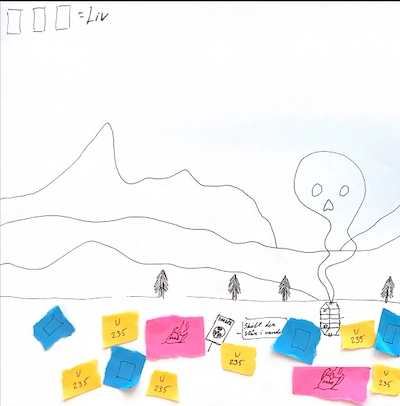
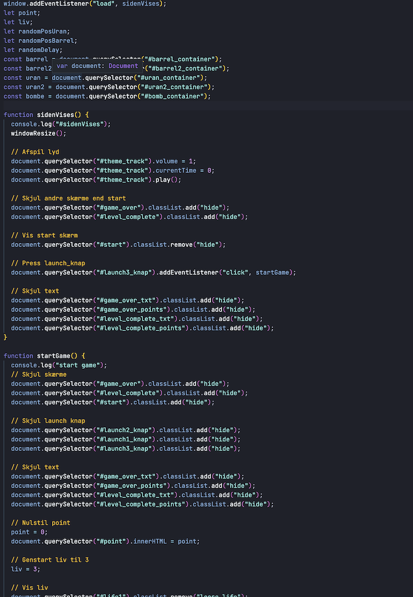
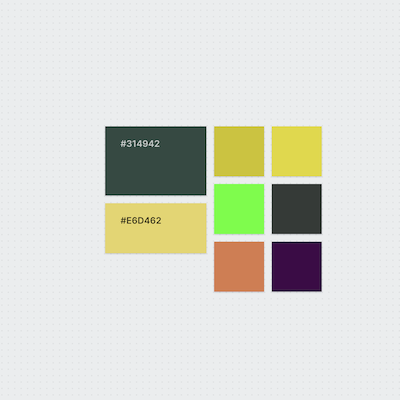
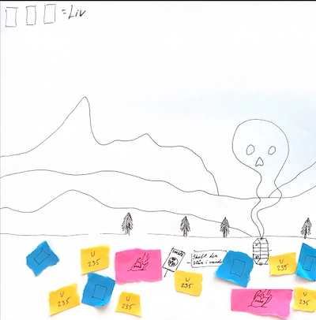
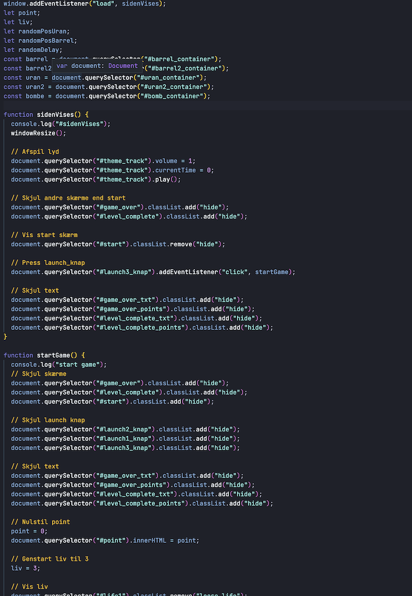
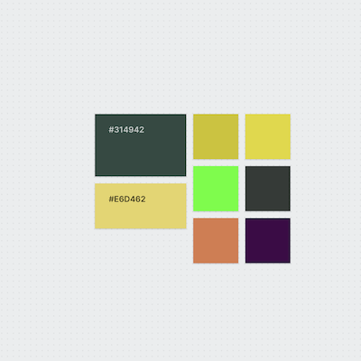

04 - Animation
På dette tema var vores mål at lære om javascript. Dette gjorde vi ved at designe et lille spil. Jeg udførte spillet ved hjælp af tidligere erfaringer om konceptudvikling. Her brugte jeg bla. en paperprototype for at teste spillets funktioner, som gjorde at jeg måtte fjerne et element fra mit spil. Til at skabe elementerne brugte jeg den viden jeg fik omkring formgivnings- og kompositionsprincipper. Efter konceptet var på plads og testet, udarbejdede jeg et UML aktivitetsdiagram og state machine diagram, som skulle hjælpe med at programmere spillet. Her lærte jeg at benytte javascript til at skabe en interaktiv oplevelse gennem variabler, addClass/removeClass, events og math.random til bla. at positionere mine spil elementer tilfældigt.
 





Det lærte mig
Det lærte mig vigtigheden i javascript til at lave et interaktivt site. Jeg lærte at gøre brug af tidligere erfaringer og værktøjer, både til design, konceptudvikling og programmering. Værktøjer som moodboard og style tile. Jeg lærte at anvende at anvende og planlægge brugertest i form af peer to peer feedback.